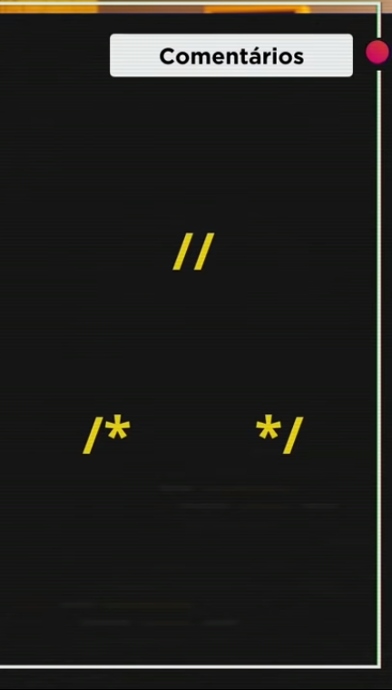
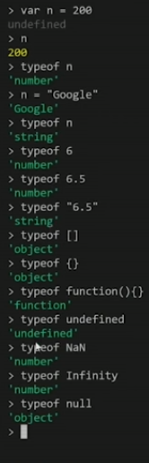
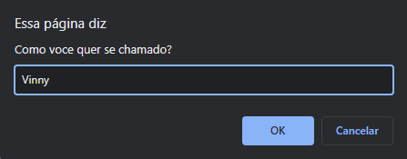
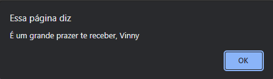
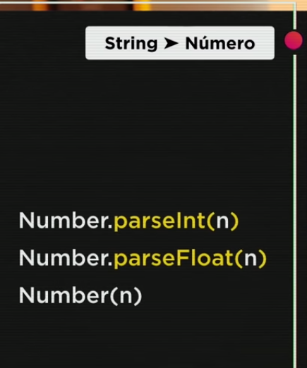
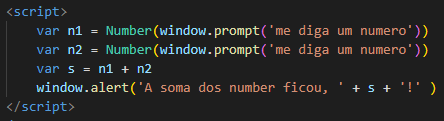
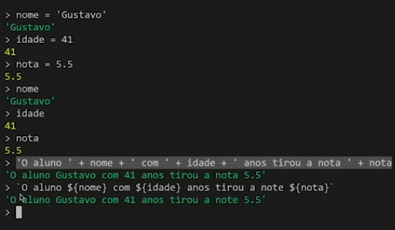
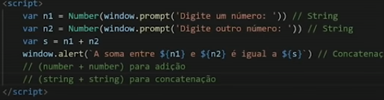
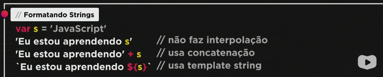

Como fazer comentarios na parte de JavaScript
Eu posso fazer comentarios no JavaScript que não vai aparecer no site, se eu quiser fazer comentarios em CSS /*comentario em css */ e em HTML5 é apenas < !-- isso é um cometario em HTML5 --> .
Eu posso fazer comentarios no JavaScript que não vai aparecer no site, se eu quiser fazer comentarios em CSS /*comentario em css */ e em HTML5 é apenas < !-- isso é um cometario em HTML5 --> .
O simbulo de "igual", se chama "Recebe" em JavaScript. As variaveis(VAR) são as vagas como na imagens a cima, e não tem como elas receberem 2 carros(Dados) em uma vaga(variavel) só.

Tem 3 tipos de Aspas que são Aspas duplas, Aspas Simples e a crase, e tem sim difereça de usar cada uma no JavaScript.

Esses são tipos de regras de identificadores, mas lembrar que não pode usar nome de functions como identificadores
Eu posso fazer a variavel receber dessa forma. (Var Nome = 'Vinicius') . E toda vez que eu colocar "Nome" ela vai informar o nome Vinicius. Lembrando que sempre que eu for colocar nomes, eu terei que colocar dentro de Aspas! E pra fechar o Node.js é só fazer o comando nele ".exit"
Eu posso abrir Node.JS no VSCODE também, indo no "Terminal" lá em cima e "Novo Terminal" vai abrir um novo terminal e em logo em seguida eu escrevo "node" no terminal ele abre o Node.js no proprio VSCODE, e pra sair eu escrevo igual no Node.js ".exit" e pra fechar um terminal eu escrevo apenas "exit".

E se ficar muito poluido meu Node.JS eu posso dar um "Ctrl+L" que limpa tudo.


Posso usar "Typeof" que significa tipo
A vaga(VAR) não é nenhum tipo(typeof) eu decido quando vou colocar no meu VAR depois, como na imagem a cima.



Usando "Concanetação" eu consigo fazer com que o nome que foi colocando no login seja a forma de receber, e posso colocar um ponto '.' ou sinal de exclmação '!' fazendo Concanetação novamente como na imagem a cima.
Concanetação é esse + que liga uma VAR na outra.
Esse filho de uma cachorra só entende como String ou seja, se eu colocar "n1 = 4" e o "n2 = 6" ele vai dizer q a conta deu "46", ai no caso eu tenho que fazer ele entender como numer, como eu faço isso?! eu sei la porra! MENTIRA sei sim, olha os exemplos a baixo :D
Eu posso colocar pra ele entender como number dessas 3 formas a primeira é "Number.parseInt(n)" ele conta como numero inteiro
But se eu quiser colocar como Real (exp:8.5) numero quebrados dessa forma, eu coloco Number.parseFloat(n).
Mas também se eu tiver com preguiça eu posso só colocar Number(n) e deixar ele se virar.
Ficando dessa forma ele entende que é Number e faz a soma.
Ai essa caralha de Number vira uma String novamente

Isso aqui são coisas pra ver depois, pois agora estou com uma preguiça tremenda, mas sei que é importante aprender
Mais um pra ver

Se eu quiser com Casas decimais eu faço isso.
Se eu quiser subistituir o .(Ponto) por ,(virgula) é só fazer o que ilustra a cima.